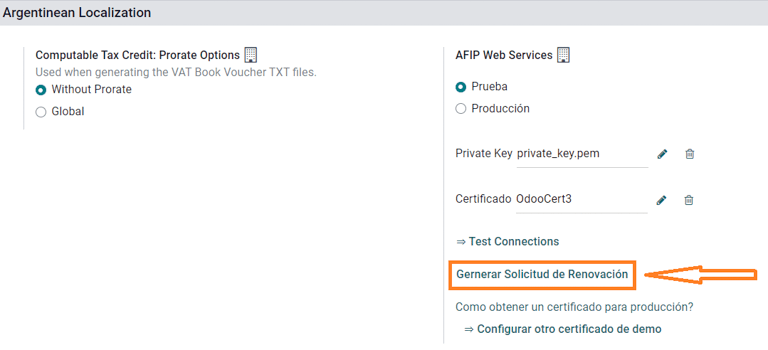
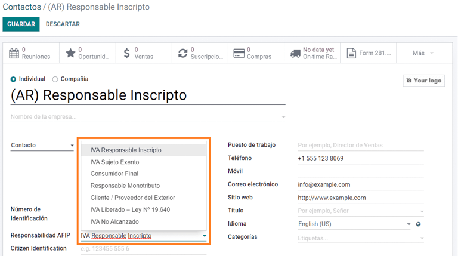
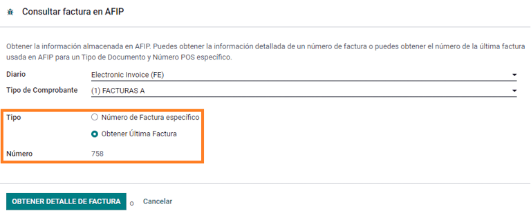
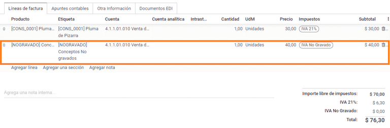
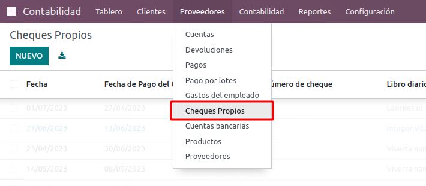
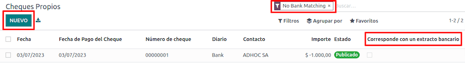
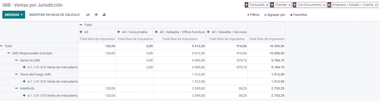

ประเทศอาร์เจนตินา¶
การสัมมนาผ่านเว็บ¶
ด้านล่างนี้คุณจะพบวิดีโอพร้อมคำอธิบายทั่วไปเกี่ยวกับการประยุกต์ใช้เป็นภาษาท้องถิ่น และวิธีการกำหนดค่า
การกำหนดค่า¶
การติดตั้งโมดูล¶
ติดตั้ง โมดูลต่อไปนี้เพื่อรับฟีเจอร์ทั้งหมดของการประยุกต์ใช้สำหรับประเทศอาร์เจนตินา:
ชื่อ |
ชื่อทางเทคนิค |
คำอธิบาย |
|---|---|---|
ประเทศอาร์เจนตินา - ระบบบัญชี |
|
ค่าเริ่มต้น แพ็คเกจการประยุกต์ใช้ทางการเงิน ซึ่งแสดงถึงการกำหนดค่าขั้นต่ำเพื่อดำเนินการในประเทศอาร์เจนตินาภายใต้ข้อบังคับและแนวปฏิบัติ AFIP |
รายงานทางบัญชีสำหรับประเทศอาร์เจนตินา |
|
รายงานสมุดภาษีมูลค่าเพิ่มและรายงานสรุปภาษีมูลค่าเพิ่ม |
การออกใบแจ้งหนี้อิเล็กทรอนิกส์ของประเทศอาร์เจนตินา |
|
รวมข้อกำหนดด้านเทคนิคและการทำงานทั้งหมดเพื่อสร้างใบแจ้งหนี้อิเล็กทรอนิกส์ผ่านบริการเว็บ ตามข้อบังคับ AFIP |
|
(ไม่บังคับ) อนุญาตให้ผู้ใช้ดูประเภทการระบุตัวตนและความรับผิดชอบ AFIP ในแบบฟอร์มการชำระเงินอีคอมเมิร์ซเพื่อสร้างใบแจ้งหนี้อิเล็กทรอนิกส์ |
กำหนดค่าบริษัทของคุณ¶
เมื่อติดตั้งโมดูลการประยุกต์ใช้แล้ว ขั้นตอนแรกคือการตั้งค่าข้อมูลของบริษัท นอกเหนือจากข้อมูลพื้นฐานแล้ว ฟิลด์สำคัญที่ต้องกรอกคือ ประเภทความรับผิดชอบ AFIP ซึ่งแสดงถึงภาระผูกพันทางการเงินและโครงสร้างของบริษัท

ผังบัญชี¶
ในระบบบัญชี มีแพ็คเกจ ผังบัญชี ที่แตกต่างกันสามแบบให้เลือก ขึ้นอยู่กับประเภทความรับผิดชอบ AFIP ของบริษัท และพิจารณาความแตกต่างระหว่างบริษัทที่ไม่จำเป็นต้องมีบัญชีมากเท่ากับบริษัทที่มีข้อกำหนดทางการเงินที่ซับซ้อนมากขึ้น:
Monotributista (227 บัญชี);
IVA Exento (290 บัญชี);
Responsable Inscripto (298 บัญชี)

กำหนดค่าข้อมูลหลัก¶
ข้อมูลรับรองใบแจ้งหนี้อิเล็กทรอนิกส์¶
สภาพแวดล้อม¶
โครงสร้างพื้นฐาน AFIP ถูกจำลองแบบในสภาพแวดล้อมที่แยกจากกันสองสภาพแวดล้อม คือ การทดสอบ และ การใช้งานจริง
มีการทดสอบเพื่อให้บริษัทสามารถทดสอบฐานข้อมูลของตนได้จนกว่าพวกเขาจะพร้อมที่จะย้ายเข้าสู่สภาพแวดล้อม การใช้งานจริง เนื่องจากสภาพแวดล้อมทั้งสองนี้แยกจากกันโดยสิ้นเชิง ใบรับรองดิจิทัลของอินสแตนซ์หนึ่งจึงใช้ไม่ได้กับอีกอินสแตนซ์หนึ่ง
หากต้องการเลือกสภาพแวดล้อมฐานข้อมูล ให้ไปที่ และเลือก Prueba (การทดสอบ) หรือ Produccion (การใช้งานจริง)

ใบรับรอง AFIP¶
ใบแจ้งหนี้อิเล็กทรอนิกส์และบริการ AFIP อื่นๆ ทำงานร่วมกับ Web Services (WS) ที่ให้บริการโดย AFIP
เพื่อให้สามารถสื่อสารกับ AFIP ได้ ขั้นตอนแรกคือการขอ :guillabel:`ใบรับรองดิจิทัล` หากคุณยังไม่มี
สร้างคำขอลงนามใบรับรอง (Odoo) เมื่อเลือกตัวเลือกนี้ ไฟล์ที่มีนามสกุล
.csr(คำขอลงนามใบรับรอง) จะถูกสร้างขึ้นเพื่อใช้ในพอร์ทัล AFIP เพื่อขอใบรับรองสร้างใบรับรอง (AFIP) เข้าถึงพอร์ทัล AFIP และทำตามคำแนะนำที่อธิบายไว้ใน เอกสารนี้ เพื่อรับใบรับรอง
อัปโหลดใบรับรองและคีย์ส่วนตัว (Odoo) เมื่อสร้างใบรับรองแล้ว ให้อัปโหลดไปที่ Odoo โดยใช้ไอคอน ดินสอ ถัดจากช่อง ใบรับรอง แล้วเลือกไฟล์ที่เกี่ยวข้อง

Tip
ในกรณีที่คุณต้องกำหนดค่าใบรับรอง Homologation โปรดดูเอกสารอย่างเป็นทางการของ AFIP: ใบรับรอง Homologation นอกจากนี้ Odoo ยังให้ผู้ใช้สามารถทดสอบการออกใบแจ้งหนี้อิเล็กทรอนิกส์ภายในเครื่องได้โดยไม่ต้องใช้ใบรับรอง Homologation ข้อความต่อไปนี้จะอยู่ในแชทเมื่อทำการทดสอบในเครื่อง:

พาร์ทเนอร์¶
ประเภทบัตรประจำตัวและภาษีมูลค่าเพิ่ม¶
ในฐานะที่เป็นส่วนหนึ่งของการประยุกต์ใช้สำหรับประเทศอาร์เจนตินา ขณะนี้ประเภทเอกสารที่กำหนดโดย AFIP มีให้ใช้งานใน แบบฟอร์มคู่ค้า ข้อมูลเป็นสิ่งจำเป็นสำหรับการทำธุรกรรมส่วนใหญ่ มี ประเภทการระบุตัวตน อยู่หกประเภทตามค่าเริ่มต้น เช่นเดียวกับ 32 ประเภทที่ไม่ได้ใช้งาน

Note
รายการทั้งหมดของ ประเภทการระบุตัวตน ที่กำหนดโดย AFIP จะรวมอยู่ใน Odoo แต่จะมีเพียงประเภททั่วไปเท่านั้นที่ใช้งานอยู่
ประเภทความรับผิดชอบ AFIP¶
ในอาร์เจนตินา ชนิดเอกสารและธุรกรรมที่เกี่ยวข้องที่เกี่ยวข้องกับลูกค้าและผู้จำหน่ายถูกกำหนดโดยชนิดความรับผิดชอบของ AFIP ควรกำหนดฟิลด์นี้ใน แบบฟอร์มคู่ค้า
ภาษี¶
ในฐานะที่เป็นส่วนหนึ่งของโมดูลการประยุกต์ใช้ ภาษีจะถูกสร้างขึ้นโดยอัตโนมัติด้วยบัญชีทางการเงินและการกำหนดค่าที่เกี่ยวข้อง เช่น ภาษี 73 รายการสำหรับ Responsable Inscripto

ประเภทภาษี¶
ประเทศอาร์เจนตินามีภาษีหลายประเภท ประเภทที่พบบ่อยที่สุดคือ:
VAT: นี่คือภาษีมูลค่าเพิ่มปกติและสามารถมีเปอร์เซ็นต์ต่างๆ ได้
การรับรู้: การชำระภาษีล่วงหน้าที่ใช้กับใบแจ้งหนี้
การเก็บรักษา: การชำระภาษีล่วงหน้าที่ใช้กับการชำระเงิน
ภาษีพิเศษ¶
โดยทั่วไปภาษีสำหรับประเทศอาร์เจนตินาบางรายการไม่สามารถได้ใช้กับทุกบริษัท และตัวเลือกที่ใช้กันทั่วไปน้อยกว่าเหล่านั้นจะถูกระบุว่าไม่ได้ใช้งานใน Odoo ตามค่าเริ่มต้น ก่อนที่จะสร้างภาษีใหม่ โปรดตรวจสอบว่าภาษีนั้นไม่ได้รวมเป็นปิดใช้งานอยู่หรือไม่

ประเภทเอกสาร¶
ในบางประเทศในละตินอเมริกา เช่น ประเทศอาร์เจนตินา ธุรกรรมทางบัญชีบางรายการ เช่น ใบแจ้งหนี้และใบเรียกเก็บเงินของผู้จำหน่าย จะถูกจัดประเภทตามชนิดเอกสารที่กำหนดโดยหน่วยงานทางการเงินของรัฐบาล ในประเทศอาร์เจนตินา AFIP เป็นหน่วยงานทางการคลังของรัฐบาลที่กำหนดธุรกรรมดังกล่าว
ประเภทเอกสารเป็นส่วนสำคัญของข้อมูลที่ต้องแสดงอย่างชัดเจนในรายงานที่พิมพ์ออกมา ใบแจ้งหนี้ และรายการสมุดรายวันที่แสดงรายการบัญชีที่ย้าย
เอกสารแต่ละประเภทสามารถมีลำดับที่ไม่ซ้ำกันสำหรับแต่ละสมุดรายวันที่ได้รับการมอบหมาย ในฐานะที่เป็นส่วนหนึ่งของการประยุกต์ใช้ ประเภทเอกสารจะรวมถึงประเทศที่เอกสารนั้นสามารถใช้ได้ (ข้อมูลนี้จะถูกสร้างขึ้นโดยอัตโนมัติเมื่อมีการติดตั้งโมดูลการประยุกต์ใช้)
ข้อมูลที่จำเป็นสำหรับ ประเภทเอกสาร จะถูกรวมไว้ตามค่าเริ่มต้น ดังนั้นผู้ใช้จึงไม่จำเป็นต้องกรอกข้อมูลใดๆ ในมุมมองนี้:

Note
มี ประเภทเอกสาร หลายประเภทที่ไม่ได้ใช้งานตามค่าเริ่มต้น แต่สามารถเปิดใช้งานได้ตามต้องการ
จดหมาย¶
สำหรับประเทศอาร์เจนตินา ประเภทเอกสาร จะมีตัวอักษรที่ช่วยระบุประเภทของธุรกรรมหรือการดำเนินการ ตัวอย่างเช่น เมื่อใบแจ้งหนี้เกี่ยวข้องกับ a(n):
ธุรกรรม B2B, ประเภทเอกสาร A ต้องใช้;
ธุรกรรม B2C, ประเภทเอกสาร B ต้องใช้;
ธุรกรรมการส่งออก ประเภทเอกสาร E ต้องใช้
เอกสารที่รวมอยู่ในการประยุกต์ใช้มีตัวอักษรที่เหมาะสมซึ่งเชื่อมโยงกับแต่ละ ประเภทเอกสาร อยู่แล้ว ดังนั้นจึงไม่จำเป็นต้องกำหนดค่าเพิ่มเติม

ใช้กับใบแจ้งหนี้¶
ประเภทเอกสาร ในแต่ละธุรกรรมจะถูกกำหนดโดย:
รายการสมุดรายวันที่เกี่ยวข้องกับใบแจ้งหนี้ (หากสมุดรายวันใช้เอกสาร)
เงื่อนไขที่ใช้ขึ้นอยู่กับประเภทของผู้ออกและผู้รับ (เช่น ประเภทของระบอบการปกครองทางการเงินของผู้ซื้อและประเภทของระบอบการปกครองทางการเงินของผู้จำหน่าย)
สมุดรายวัน¶
ในการประยุกต์ใช้สำหรับประเทศอาร์เจนตินา สมุดรายวันอาจมีแนวทางที่แตกต่างกัน ขึ้นอยู่กับการใช้งานและประเภทภายใน หากต้องการกำหนดค่าสมุดรายวัน ให้ไปที่
สำหรับสมุดรายวันการขายและการซื้อ คุณสามารถเปิดใช้งานตัวเลือก ใช้เอกสาร ซึ่งเปิดใช้งานรายการ ประเภทเอกสาร ที่อาจเกี่ยวข้องกับใบแจ้งหนี้และใบเรียกเก็บเงินของผู้ขาย สำหรับรายละเอียดเพิ่มเติมเกี่ยวกับใบแจ้งหนี้ โปรดดูที่ส่วน 2.3 ประเภทเอกสาร
หากสมุดรายวันการขายหรือการซื้อไม่ได้เปิดใช้งานตัวเลือก ใช้เอกสาร พวกเขาจะไม่สามารถสร้างใบแจ้งหนี้ทางการเงินได้ ซึ่งหมายความว่ากรณีการใช้งานส่วนใหญ่จะจำกัดอยู่เพียงการตรวจสอบการย้ายบัญชีที่เกี่ยวข้องกับกระบวนการควบคุมภายใน
ข้อมูล AFIP (หรือเรียกอีกอย่างว่าระบบขายหน้าร้าน AFIP)¶
ระบบ AFIP POS เป็นฟิลด์ที่มองเห็นได้สำหรับสมุดรายวัน การขาย เท่านั้น และกำหนดประเภทของ AFIP POS ที่จะใช้ในการจัดการธุรกรรมที่จะสร้างสมุดรายวัน
AFIP POS กำหนดสิ่งต่อไปนี้:
ลำดับของประเภทเอกสารที่เกี่ยวข้องกับบริการเว็บ
โครงสร้างและข้อมูลของไฟล์ใบแจ้งหนี้อิเล็กทรอนิกส์

บริการบนเว็บ¶
บริการบนเว็บ ช่วยสร้างใบแจ้งหนี้เพื่อวัตถุประสงค์ที่แตกต่างกัน ด้านล่างนี้เป็นตัวเลือกบางส่วนให้เลือก:
wsfev1: ใบแจ้งหนี้อิเล็กทรอนิกส์: เป็นบริการทั่วไปที่ใช้ในการสร้างใบแจ้งหนี้สำหรับเอกสารประเภท A, B, C, M โดยไม่มีรายละเอียดต่อรายการ
wsbfev1: พันธบัตรการคลังอิเล็กทรอนิกส์: มีไว้สำหรับผู้ที่ออกใบแจ้งหนี้สินค้าทุนและต้องการเข้าถึงสิทธิประโยชน์ของพันธบัตรภาษีอิเล็กทรอนิกส์ที่ได้รับจากกระทรวงเศรษฐกิจ ดูรายละเอียดเพิ่มเติมได้ที่: พันธบัตรเพื่อการคลัง;
wsfexv1: ใบแจ้งหนี้การส่งออกทางอิเล็กทรอนิกส์: ใช้เพื่อสร้างใบแจ้งหนี้สำหรับลูกค้าต่างประเทศและธุรกรรมที่เกี่ยวข้องกับกระบวนการส่งออก ประเภทเอกสารที่เกี่ยวข้องคือประเภท "E"

ต่อไปนี้เป็นช่องข้อมูลที่เป็นประโยชน์ที่ควรทราบเมื่อทำงานกับบริการบนเว็บ:
หมายเลข AFIP POS: คือหมายเลขที่กำหนดค่าใน AFIP เพื่อระบุการดำเนินการที่เกี่ยวข้องกับ AFIP POS นี้
ที่อยู่ AFIP POS: เป็นฟิลด์ที่เกี่ยวข้องกับที่อยู่เชิงพาณิชย์ที่ลงทะเบียนสำหรับ POS ซึ่งโดยปกติจะเป็นที่อยู่เดียวกันกับบริษัท ตัวอย่างเช่น หากบริษัทมีร้านค้าหลายแห่ง (สถานที่ทางการเงิน) AFIP จะกำหนดให้บริษัทมี AFIP POS หนึ่งรายการต่อสถานที่ สถานที่นี้จะถูกพิมพ์ในรายงานใบแจ้งหนี้
หนังสือรวม: เมื่อระบบ AFIP POS คือ Preimpresa ประเภทเอกสาร (ใช้ได้กับสมุดรายวัน) ที่มีตัวอักษรเดียวกันจะใช้ลำดับเดียวกัน ตัวอย่างเช่น:
ใบแจ้งหนี้: FA-A 0001-00000002;
ใบลดหนี้: NC-A 0001-00000003;
ใบเพิ่มหนี้: ND-A 0001-00000004.
ลำดับ¶
สำหรับใบแจ้งหนี้ใบแรก Odoo จะซิงโครไนซ์กับ AFIP โดยอัตโนมัติและแสดงลำดับสุดท้ายที่ใช้
Note
เมื่อสร้าง สมุดรายวันจัดซื้อ คุณสามารถกำหนดได้ว่าเกี่ยวข้องกับประเภทเอกสารหรือไม่ ในกรณีที่เลือกตัวเลือกในการใช้เอกสาร ไม่จำเป็นต้องเชื่อมโยงลำดับชนิดเอกสารด้วยตนเอง เนื่องจากผู้จำหน่ายจะเป็นผู้ระบุหมายเลขเอกสาร
การใช้งานและการทดสอบ¶
ใบแจ้งหนี้¶
ข้อมูลด้านล่างใช้กับการสร้างใบแจ้งหนี้เมื่อมีการสร้างและกำหนดค่าคู่ค้าและสมุดรายวันอย่างเหมาะสม
การกำหนดประเภทเอกสาร¶
เมื่อเลือกคู่ค้าแล้ว ช่อง ประเภทเอกสาร จะถูกกรอกโดยอัตโนมัติตามประเภทเอกสาร AFIP:
ใบแจ้งหนี้สำหรับลูกค้า IVA Responsable Inscripto คำนำหน้า A คือประเภทเอกสารที่แสดงภาษีทั้งหมดโดยละเอียดพร้อมกับข้อมูลของลูกค้า

ใบแจ้งหนี้สำหรับลูกค้า คำนำหน้า B คือประเภทของเอกสารที่ไม่มีรายละเอียดภาษี เนื่องจากภาษีจะรวมอยู่ในยอดรวมแล้ว

ใบกำกับสินค้าส่งออก คำนำหน้า E คือประเภทของเอกสารที่ใช้ในการส่งออกสินค้าที่แสดง Incoterm

แม้ว่าใบแจ้งหนี้บางรายการจะใช้สมุดรายวันเดียวกัน แต่คำนำหน้าและลำดับจะได้รับจากฟิลด์ ประเภทเอกสาร
ประเภทเอกสาร ที่พบบ่อยที่สุดจะถูกกำหนดโดยอัตโนมัติสำหรับการรวมประเภทความรับผิดชอบ AFIP ที่แตกต่างกัน แต่ผู้ใช้สามารถอัปเดตด้วยตนเองก่อนที่จะยืนยันใบแจ้งหนี้
องค์ประกอบใบแจ้งหนี้อิเล็กทรอนิกส์¶
เมื่อใช้ใบแจ้งหนี้อิเล็กทรอนิกส์ หากข้อมูลทั้งหมดถูกต้อง ใบแจ้งหนี้จะถูกผ่านรายการด้วยวิธีมาตรฐาน เว้นแต่จะมีข้อผิดพลาดที่ต้องแก้ไข เมื่อข้อความแสดงข้อผิดพลาดจะแสดงขึ้น ซึ่งจะระบุทั้งปัญหาที่ต้องดำเนินการพร้อมกับแนวทางแก้ไขที่เสนอ หากยังมีข้อผิดพลาดอยู่ ใบแจ้งหนี้จะยังคงอยู่ในร่างจนกว่าปัญหาจะได้รับการแก้ไข
เมื่อลงรายการใบแจ้งหนี้แล้ว ข้อมูลที่เกี่ยวข้องกับการตรวจสอบและสถานะ AFIP จะแสดงในแท็บ AFIP รวมถึง:
AFIP อัตโนมัติ: หมายเลข CAE;
วันหมดอายุ: กำหนดเวลาในการส่งมอบใบแจ้งหนี้ให้กับลูกค้า (ปกติ 10 วันหลังจากสร้าง CAE)
ผลลัพธ์: ระบุว่าใบแจ้งหนี้เป็น Aceptado en AFIP และ/หรือ Aceptado con Observaciones

ออกใบกำกับภาษี¶
ตาม ประเภทความรับผิดชอบของ AFIP ภาษี VAT อาจนำไปใช้แตกต่างออกไปในรายงาน PDF:
:guilabel:`A. ไม่รวมภาษี: ในกรณีนี้ จะต้องระบุจำนวนเงินภาษีให้ชัดเจนในรายงาน เงื่อนไขนี้ใช้เมื่อลูกค้ามีประเภทความรับผิดชอบ AFIP ต่อไปนี้เป็น Responsable Inscripto;

:guilabel:`B. จำนวนภาษีรวมแล้ว: หมายความว่าจำนวนภาษีจะรวมเป็นส่วนหนึ่งของราคาผลิตภัณฑ์ ผลรวมย่อย และผลรวม เงื่อนไขนี้ใช้เมื่อลูกค้ามีประเภทความรับผิดชอบ AFIP ต่อไปนี้:
IVA Sujeto Exento;
Consumidor Final;
Responsable Monotributo;
IVA liberado.

กรณีการใช้งานพิเศษ¶
ใบแจ้งหนี้สำหรับการบริการ¶
สำหรับใบแจ้งหนี้อิเล็กทรอนิกส์ที่มี การบริการ AFIP จำเป็นต้องรายงานวันที่เริ่มต้นและสิ้นสุดของบริการ โดยสามารถกรอกข้อมูลนี้ลงในแท็บ ข้อมูลอื่นๆ

หากไม่ได้เลือกวันที่ด้วยตนเองก่อนตรวจสอบใบแจ้งหนี้ ค่าจะถูกกรอกโดยอัตโนมัติด้วยวันแรกและวันสุดท้ายของเดือนในใบแจ้งหนี้

ใบแจ้งหนี้การส่งออก¶
ใบแจ้งหนี้ที่เกี่ยวข้องกับ ธุรกรรมการส่งออก กำหนดให้สมุดรายวันใช้ระบบ AFIP POS Expo Voucher - บริการทางเว็บ เพื่อให้สามารถเชื่อมโยงประเภทเอกสารที่เหมาะสมได้

เมื่อลูกค้าที่เลือกในใบแจ้งหนี้ได้รับการกำหนดค่าด้วยประเภทความรับผิดชอบ AFIP Cliente / Proveedor del Outside - Ley N° 19.640 Odoo จะกำหนด:
สมุดรายวันที่เกี่ยวข้องกับบริการเว็บส่งออก
ประเภทเอกสารการส่งออก
สถานะทางการเงิน: Compras/Ventas al exterior;
Concepto AFIP: ผลิตภัณฑ์ / การส่งออกสินค้าขั้นสุดท้าย
ภาษีที่ได้รับการยกเว้น

Note
เอกสารการส่งออกจำเป็นต้องเปิดใช้งานและกำหนดค่า Incoterms ซึ่งสามารถพบได้ใน

พันธบัตรทางการคลัง¶
พันธบัตรการคลังอิเล็กทรอนิกส์ ใช้สำหรับผู้ที่ออกใบแจ้งหนี้สินค้าทุนและต้องการเข้าถึงสิทธิประโยชน์ของพันธบัตรภาษีอิเล็กทรอนิกส์ที่ได้รับจากกระทรวงเศรษฐกิจ
สำหรับธุรกรรมเหล่านี้ สิ่งสำคัญคือต้องพิจารณาข้อกำหนดต่อไปนี้:
สกุลเงิน (ตามตารางพารามิเตอร์) และใบเสนอราคาใบแจ้งหนี้
ภาษี;
โซน;
รายละเอียดแต่ละรายการ
รหัสตาม Common Nomenclator ของ Mercosur (NCM);
คำอธิบายโดยละเอียด;
ราคาสุทธิต่อหน่วย;
ปริมาณ;
หน่วยวัด;
โบนัส;
อัตราภาษีมูลค่าเพิ่ม
ใบกำกับเครดิตอิเล็กทรอนิกส์ MiPyme (FCE)¶
สำหรับใบแจ้งหนี้ SME มีเอกสารหลายประเภทที่จัดประเภทเป็น MiPyME ซึ่งเรียกอีกอย่างว่า ใบแจ้งหนี้เครดิตอิเล็กทรอนิกส์ (หรือ FCE ในภาษาสเปน) การจัดหมวดหมู่นี้พัฒนากลไกที่ปรับปรุงเงื่อนไขทางการเงินสำหรับธุรกิจขนาดเล็กและขนาดกลาง และช่วยให้พวกเขาสามารถเพิ่มประสิทธิภาพการทำงานผ่านการรวบรวมสินเชื่อและลูกหนี้ตั้งแต่เนิ่นๆ ที่ออกให้กับลูกค้าและ/หรือผู้ขาย
สำหรับธุรกรรมเหล่านี้ สิ่งสำคัญคือต้องพิจารณาข้อกำหนดต่อไปนี้:
ประเภทเอกสารเฉพาะ (201, 202, 206 ฯลฯ )
ตัวส่งควรมีสิทธิ์ตามธุรกรรม AFIP ถึง MiPyME
จำนวนเงินควรมากกว่า 100,000 ARS
บัญชีธนาคารประเภท CBU ต้องเกี่ยวข้องกับ emisor ไม่เช่นนั้นจะไม่สามารถตรวจสอบใบแจ้งหนี้ได้ โดยมีข้อความแสดงข้อผิดพลาดดังต่อไปนี้

หากต้องการตั้งค่า โหมดการส่งข้อมูล ให้ไปที่การตั้งค่าและเลือก SDC หรือ ADC

หากต้องการเปลี่ยน โหมดการส่งข้อมูล สำหรับใบแจ้งหนี้เฉพาะ ให้ไปที่แท็บ ข้อมูลอื่นๆ และเปลี่ยนแปลงก่อนยืนยัน
Note
การเปลี่ยน โหมดการส่งข้อมูล จะไม่เปลี่ยนโหมดที่เลือกใน การตั้งค่า
เมื่อสร้าง เครดิต/เดบิต บันทึกที่เกี่ยวข้องกับเอกสาร FCE:
ใช้ปุ่ม ใบลดหนี้และใบเพิ่มหนี้ ดังนั้นข้อมูลทั้งหมดจากใบแจ้งหนี้จะถูกโอนไปยัง ใบลดหนี้และใบเพิ่มหนี้ ใหม่;
จดหมายเอกสารควรเหมือนกับเอกสารของต้นฉบับ (A หรือ B)
ต้องใช้สกุลเงินเดียวกันกับเอกสารต้นฉบับ เมื่อใช้สกุลเงินรองจะมีความแตกต่างในการแลกเปลี่ยนหากอัตราสกุลเงินแตกต่างกันระหว่างวันที่ปล่อยก๊าซและวันที่ชำระเงิน สามารถสร้างใบลดหนี้/ใบเพิ่มหนี้/เพิ่มจำนวนเงินที่ต้องชำระเป็น ARS ได้

เมื่อสร้าง ใบลดหนี้ เราสามารถมีได้ 2 สถานการณ์:
FCE ถูกปฏิเสธ ดังนั้น ใบลดหนี้ ควรมีฟิลด์ FCE คือการยกเลิกใช่หรือไม่? เป็น จริง; หรือ;
ใบลดหนี้ ถูกสร้างขึ้นเพื่อยกเลิกเอกสาร FCE ในกรณีนี้ ฟิลด์ FCE คือการยกเลิกใช่หรือไม่? จะต้อง ว่างเปล่า (false)

รายงานการพิมพ์ใบแจ้งหนี้¶
รายงาน PDF ที่เกี่ยวข้องกับใบแจ้งหนี้อิเล็กทรอนิกส์ที่ได้รับการตรวจสอบโดย AFIP จะมีบาร์โค้ดที่ด้านล่างของรูปแบบซึ่งแสดงถึงหมายเลข CAE วันหมดอายุจะแสดงด้วยเนื่องจากเป็นข้อกำหนดทางกฎหมาย

การแก้ไขปัญหาและการตรวจสอบ¶
เพื่อวัตถุประสงค์ในการตรวจสอบและแก้ไขปัญหา คุณสามารถรับข้อมูลโดยละเอียดของหมายเลขใบแจ้งหนี้ที่ส่งไปยัง AFIP ก่อนหน้านี้ได้ หากต้องการดึงข้อมูลนี้ ให้เปิดใช้งาน โหมดนักพัฒนา จากนั้นไปที่เมนู และคลิกที่ปุ่ม ใบแจ้งหนี้ที่ปรึกษา ใน AFIP


นอกจากนี้ยังสามารถเรียกดูหมายเลขสุดท้ายที่ใช้ใน AFIP สำหรับประเภทเอกสารเฉพาะและหมายเลข POS เพื่อใช้อ้างอิงสำหรับปัญหาที่เป็นไปได้ในการซิงโครไนซ์ลำดับระหว่าง Odoo และ AFIP
ใบเรียกเก็บเงินผู้ขาย¶
ตามสมุดรายวันการซื้อที่เลือกสำหรับใบเรียกเก็บเงินของผู้จำหน่าย ตอนนี้ ประเภทเอกสาร เป็นฟิลด์บังคับ ค่านี้จะถูกเติมโดยอัตโนมัติตามประเภทความรับผิดชอบ AFIP ของผู้ออกและลูกค้า แต่ค่าสามารถเปลี่ยนแปลงได้หากจำเป็น

ช่อง หมายเลขเอกสาร จำเป็นต้องลงทะเบียนด้วยตนเอง และรูปแบบจะได้รับการตรวจสอบโดยอัตโนมัติ อย่างไรก็ตาม ในกรณีที่รูปแบบไม่ถูกต้อง ระบบจะแสดงข้อผิดพลาดของผู้ใช้เพื่อระบุรูปแบบที่ถูกต้องตามที่คาดไว้

หมายเลขใบเรียกเก็บเงินของผู้จำหน่ายมีโครงสร้างในลักษณะเดียวกับใบแจ้งหนี้ของลูกค้า ยกเว้นว่าผู้ใช้ป้อนลำดับเอกสารโดยใช้รูปแบบต่อไปนี้: คำนำหน้าเอกสาร - ตัวอักษร - หมายเลขเอกสาร
ตรวจสอบหมายเลขใบเรียกเก็บเงินของผู้จำหน่ายใน AFIP¶
เนื่องจากบริษัทส่วนใหญ่มีการควบคุมภายในเพื่อตรวจสอบว่าใบเรียกเก็บเงินของผู้ขายเกี่ยวข้องกับเอกสารที่ถูกต้องของ AFIP การตรวจสอบความถูกต้องอัตโนมัติจึงสามารถตั้งค่าได้ใน โดยคำนึงถึงระดับดังต่อไปนี้:
ไม่พร้อมใช้งาน: การตรวจสอบยังไม่เสร็จสิ้น (นี่คือค่าเริ่มต้น);
Available: the verification is done. In case the number is not valid, it only displays a warning but still allows the vendor bill to be posted;
Required: the verification is done, and it does not allow the user to post the vendor bill if the document number is not valid.
ตรวจสอบใบเรียกเก็บเงินของผู้ขายใน Odoo¶
เมื่อเปิดใช้งานการตั้งค่าการตรวจสอบความถูกต้องของผู้ขาย ปุ่มใหม่จะแสดงบนใบเรียกเก็บเงินของผู้ขายภายใน Odoo โดยมีป้ายกำกับ ตรวจสอบใน AFIP ซึ่งอยู่ถัดจากช่อง รหัสการอนุญาต AFIP

ในกรณีที่ไม่สามารถตรวจสอบใบเรียกเก็บเงินของผู้ขายใน AFIP ได้ ค่า ถูกปฏิเสธ จะถูกแสดงบนแดชบอร์ด และรายละเอียดของการยกเลิกจะถูกเพิ่มลงในแชท

กรณีการใช้งานพิเศษ¶
คอนเซ็ปท์ของการไม่หักภาษี¶
มีธุรกรรมบางอย่างที่รวมสินค้าที่ไม่ได้เป็นส่วนหนึ่งของยอดเงินฐาน VAT เช่น ใบแจ้งหนี้น้ำมันเชื้อเพลิงและน้ำมันเบนซิน
ใบเรียกเก็บเงินของผู้จำหน่ายจะได้รับการลงทะเบียนโดยใช้หนึ่งรายการสำหรับแต่ละผลิตภัณฑ์ที่เป็นส่วนหนึ่งของยอดเงินฐาน VAT และรายการเพิ่มเติมเพื่อลงทะเบียนยอดเงินของแนวคิดที่ได้รับการยกเว้น
ภาษีการรับรู้¶
ใบเรียกเก็บเงินของผู้จำหน่ายจะได้รับการลงทะเบียนโดยใช้หนึ่งรายการสำหรับแต่ละผลิตภัณฑ์ที่เป็นส่วนหนึ่งของยอดเงินฐาน VAT และสามารถเพิ่มภาษีการรับรู้ลงในรายการผลิตภัณฑ์ได้ ด้วยเหตุนี้ จะมีกลุ่มภาษีกลุ่มหนึ่งสำหรับภาษีมูลค่าเพิ่มและอีกกลุ่มหนึ่งสำหรับการรับรู้ ค่าเริ่มต้นการรับรู้จะเป็น 0.10 เสมอ
หากต้องการแก้ไขการรับรู้ VAT และกำหนดจำนวนเงินที่ถูกต้อง คุณควรใช้ไอคอน ดินสอ ที่อยู่ถัดจากจำนวนเงิน การรับรู้ หลังจากตั้งค่ายอดเงินการรับรู้ VAT แล้ว สามารถตรวจสอบใบแจ้งหนี้ได้

ตรวจสอบการจัดการ¶
หากต้องการติดตั้งโมดูล บุคคลที่สามและการจัดการเช็คแบบเลื่อนเวลา/อิเล็กทรอนิกส์ ให้ไปที่ และค้นหาโมดูลด้วยชื่อทางเทคนิค l10n_latam_check แล้วคลิกปุ่ม เปิดใช้งาน

โมดูลนี้เปิดใช้งานการกำหนดค่าที่จำเป็นสำหรับสมุดรายวันและการชำระเงินไปที่:
สร้าง จัดการ และควบคุมเช็คประเภทต่างๆ ของคุณ
เพิ่มประสิทธิภาพการจัดการ เช็คของตัวเอง และ เช็คบุคคลที่สาม
มีวิธีที่ง่ายและมีประสิทธิภาพในการจัดการวันหมดอายุจากเช็คของคุณเองและบุคคลที่สาม
เมื่อตั้งค่าคอนฟิกทั้งหมดสำหรับขั้นตอนใบแจ้งหนี้อิเล็กทรอนิกส์สำหรับประเทศอาร์เจนตินาแล้ว ยังจำเป็นต้องดำเนินการตั้งค่าคอนฟิกบางอย่างสำหรับเช็คของตัวเองและขั้นตอนเช็คของบุคคลที่สามให้เสร็จสมบูรณ์ด้วย
เช็คของตนเอง¶
กำหนดค่าสมุดรายวันธนาคารที่ใช้ในการสร้างเช็คของคุณเองโดยไปที่ เลือกสมุดรายวันของธนาคาร และเปิดแท็บ การชำระเงินขาออก
เช็ค ควรมีอยู่ใน วิธีการชำระเงิน หากไม่มี ให้คลิก เพิ่มบรรทัด และพิมพ์
เช็คใต้ วิธีการชำระเงิน เพื่อเพิ่มเปิดใช้งานการตั้งค่า ใช้เช็คอิเล็กทรอนิกส์และเช็ครอการตัดบัญชี
Note
การกำหนดค่าล่าสุดนี้ ถูกปิดใช้งาน ความสามารถในการพิมพ์ แต่เปิดใช้งานเพื่อ:
ป้อนหมายเลขเช็คด้วยตนเอง
เพิ่มช่องเพื่อจัดสรรวันที่ชำระเงินของเช็ค
การจัดการเช็คของตนเอง¶
สามารถสร้างเช็คของตนเองได้โดยตรงจากใบเรียกเก็บเงินของผู้ขาย สำหรับขั้นตอนนี้ คลิกที่ปุ่ม ลงทะเบียนการชำระเงิน
ในโมดอลการลงทะเบียนการชำระเงิน ให้เลือกสมุดรายวันธนาคารที่จะชำระเงิน และตั้งค่า วันที่เช็คเงินสดเข้า และ จำนวน

Note
ในการจัดการเช็คปัจจุบัน ช่อง วันที่เช็คเงินสดเข้า จะต้องเว้นว่างไว้หรือกรอกวันที่ปัจจุบัน ในการจัดการเช็คที่เลื่อนออกไป จะต้องตั้งค่า วันที่เช็คเงินสดเข้า ในอนาคต
หากต้องการจัดการเช็คที่มีอยู่ ให้ไปที่ หน้าต่างนี้จะแสดงข้อมูลที่สำคัญ เช่น วันที่ต้องชำระเช็ค จำนวนเช็คทั้งหมด และจำนวนเงินทั้งหมดที่ชำระเป็นเช็ค
สิ่งสำคัญคือต้องทราบว่ารายการจะถูกกรองล่วงหน้าด้วยเช็คที่ ยังไม่กระทบยอด กับใบแจ้งยอดธนาคาร - ที่ยังไม่ได้หักจากธนาคาร - ซึ่งสามารถตรวจสอบได้ด้วย ตรงกับช่องแจ้งยอดบัญชีธนาคาร หากคุณต้องการดูเช็คทั้งหมดของคุณเอง ให้ลบตัวกรอง ไม่มีการจับคู่ธนาคาร โดยคลิกที่สัญลักษณ์ X
ยกเลิกเช็คของตนเอง¶
หากต้องการยกเลิกเช็คของตัวเองที่สร้างใน Odoo ให้ไปที่ และเลือกเช็คที่จะยกเลิก จากนั้นคลิกที่ปุ่ม เช็คที่เป็นโมฆะ การดำเนินการนี้จะทำลายการกระทบยอดกับใบเรียกเก็บเงินของผู้จำหน่ายและใบแจ้งยอดจากธนาคาร และปล่อยให้เช็คอยู่ในสถานะ ยกเลิก

เช็คบุคคลที่สาม¶
เพื่อลงทะเบียนการชำระเงินโดยใช้เช็คของบุคคลที่สาม จำเป็นต้องมีการกำหนดค่าสมุดรายวันเฉพาะสองรายการ โดยไปที่ และสร้างสมุดรายวันใหม่สองรายการ:
เช็คบุคคลที่สามเช็คของบุคคลที่สามที่ถูกปฏิเสธ'
Note
คุณสามารถสร้างสมุดรายวันเพิ่มเติมได้ด้วยตนเอง หากคุณมีจุดขายหลายจุดและต้องการสมุดรายวันสำหรับจุดขายเหล่านั้น
หากต้องการสร้างบันทึก เช็คบุคคลที่สาม ให้คลิกปุ่ม สร้าง และกำหนดค่าดังต่อไปนี้:
พิมพ์
เช็คบุคคลที่สามเป็น ชื่อสมุดรายวันเลือก เงินสด เป็น ประเภท
ในแท็บ รายการสมุดรายวัน ให้ตั้งค่า บัญชีเงินสด: เป็น
1.1.1.02.010 Checks de Tercerosใส่ รหัสย่อ ที่คุณเลือก และเลือก :guilabel :สกุลเงิน

วิธีการชำระเงินที่ใช้ได้แสดงอยู่ในแท็บ การชำระเงิน:
สำหรับเช็คบุคคลที่สามที่เข้ามาใหม่ ให้ไปที่ และเลือก เช็คของบุคคลที่สามใหม่ วิธีการนี้ใช้เพื่อสร้าง สร้าง เช็คจากบุคคลที่สาม
สำหรับเช็คบุคคลที่สามที่มีอยู่ทั้งขาเข้าและขาออก ให้ไปที่ และเลือก เช็คของบุคคลที่สามที่มีอยู่ ทำซ้ำกับขั้นตอนเดียวกันสำหรับแท็บ การชำระเงินขาออก วิธีการนี้ใช้ในการรับและ/หรือชำระใบเรียกเก็บเงินของผู้ขายโดยใช้เช็ค ที่มีอยู่ อยู่แล้ว เช่นเดียวกับการโอนภายใน
Tip
คุณสามารถลบวิธีการชำระเงินที่มีอยู่แล้วซึ่งแสดงตามค่าเริ่มต้นได้ เมื่อตั้งค่าคอนฟิกสมุดรายวันเช็คของบุคคลที่สาม

จำเป็นต้องสร้างและ/หรือกำหนดค่าสมุดรายวัน เช็คของบุคคลที่สามที่ถูกปฏิเสธ ด้วย สมุดรายวันนี้ใช้เพื่อจัดการเช็คของบุคคลที่สามที่ถูกปฏิเสธ และสามารถใช้เพื่อส่งเช็คที่ถูกปฏิเสธในขณะที่เรียกเก็บเงินหรือเมื่อมาจากผู้จัดจำหน่ายเมื่อถูกปฏิเสธ
หากต้องการสร้างสมุดรายวัน เช็คของบุคคลที่สามที่ถูกปฏิเสธ ให้คลิกปุ่ม สร้าง และกำหนดค่าดังต่อไปนี้:
พิมพ์
เช็คของบุคคลที่สามที่ถูกปฏิเสธเป็น ชื่อสมุดรายวันเลือก เงินสด เป็น ประเภท
ในแท็บ รายการสมุดรายวัน ให้ตั้งค่า บัญชีเงินสด: เป็น
1.1.1.01.002 เช็คของบุคคลที่สามที่ถูกปฏิเสธใส่ รหัสย่อ ที่คุณเลือก และเลือก สกุลเงิน
ใช้วิธีการชำระเงินเดียวกันกับสมุดรายวัน เช็คบุคคลที่สาม
เช็คบุคคลที่สามใหม่¶
หากต้องการลงทะเบียนเช็คบุคคลที่สาม ใหม่ สำหรับใบแจ้งหนี้ของลูกค้า ให้คลิกปุ่ม ลงทะเบียนการชำระเงิน ในหน้าต่างป๊อปอัป คุณต้องเลือก เช็คบุคคลที่สาม เป็นสมุดรายวันสำหรับการลงทะเบียนการชำระเงิน
เลือก เช็คบุคคลที่สามใหม่ เป็น วิธีการชำระเงิน และกรอก หมายเลขเช็ค, วันที่ชำระเงิน และ เช็คธนาคาร คุณสามารถเลือกเพิ่ม เช็คผู้ออกภาษีมูลค่าเพิ่ม ด้วยตนเอง แต่ระบบจะกรอกหมายเลข VAT ของลูกค้าที่เกี่ยวข้องกับใบแจ้งหนี้โดยอัตโนมัติ

เช็คของบุคคลที่สามที่มีอยู่¶
หากต้องการชำระบิลผู้ขายด้วยเช็ค ที่มีอยู่ ให้คลิกปุ่ม ลงทะเบียนการชำระเงิน ในหน้าต่างป๊อปอัป คุณต้องเลือก เช็คบุคคลที่สาม เป็นสมุดรายวันสำหรับการลงทะเบียนการชำระเงิน
เลือก เช็คของบุคคลที่สามที่มีอยู่ เป็น วิธีการชำระเงิน และเลือกเช็คจากช่อง เช็ค ฟิลด์แสดง เช็คที่มีอยู่ ทั้งหมดเพื่อใช้เป็นการชำระเงินสำหรับใบเรียกเก็บเงินของผู้จำหน่าย

เมื่อใช้ เช็คของบุคคลที่สามที่มีอยู่ คุณสามารถตรวจสอบการดำเนินการที่เกี่ยวข้องได้ ตัวอย่างเช่น คุณสามารถดูได้ว่าเช็คของบุคคลที่สามที่จ่ายตามใบแจ้งหนี้ของลูกค้าถูกใช้ในภายหลังเป็นเช็คของบุคคลที่สามที่มีอยู่เพื่อชำระบิลของผู้ขายหรือไม่
โดยไปที่ หรือ ขึ้นอยู่กับกรณี และคลิกที่เช็ค ในฟิลด์ เช็คสมุดรายวันปัจจุบัน ให้คลิกที่ => การดำเนินการเช็ค เพื่อแสดงประวัติและการเคลื่อนไหวของเช็ค

เมนูแสดงข้อมูลสำคัญที่เกี่ยวข้องกับการดำเนินการเหล่านี้ด้วย เช่น:
ประเภทการชำระเงิน ช่วยในการจำแนกว่าเป็นการชำระเงิน ส่ง ไปยังผู้ขาย หรือการชำระเงิน ได้รับ จากลูกค้า
สมุดรายวัน ซึ่งมีการลงทะเบียนเช็คในปัจจุบัน
คู่ค้า ที่เกี่ยวข้องกับการดำเนินงาน (ลูกค้าหรือผู้จำหน่าย)
ใบแจ้งหนี้อิเล็กทรอนิกส์อีคอมเมิร์ซ¶
ติดตั้ง โมดูล อีคอมเมิร์ซของประเทศอาร์เจนตินา (l10n_ar_website_sale) เพื่อเปิดใช้งานฟีเจอร์และการกำหนดค่าต่อไปนี้:
ลูกค้าสามารถสร้างบัญชีออนไลน์เพื่อวัตถุประสงค์ด้านอีคอมเมิร์ซได้
รองรับฟิลด์ทางการเงินที่จำเป็นในแอปพลิเคชันอีคอมเมิร์ซ
รับการชำระเงินสำหรับการสั่งซื้อการขายออนไลน์
สร้างเอกสารอิเล็กทรอนิกส์จากแอปพลิเคชันอีคอมเมิร์ซ
การกำหนดค่า¶
เมื่อการกำหนดค่าทั้งหมดถูกสร้างขึ้นสำหรับโฟลว์ ใบแจ้งหนี้อิเล็กทรอนิกส์ ของประเทศอาร์เจนตินาแล้ว ยังจำเป็นต้องดำเนินการกำหนดค่าบางอย่างให้เสร็จสิ้นเพื่อรวมโฟลว์ของอีคอมเมิร์ซด้วย
การลงทะเบียนบัญชีลูกค้า¶
หากต้องการกำหนดค่าเว็บไซต์ของคุณสำหรับบัญชีลูกค้า ให้ทำตามคำแนะนำในเอกสารประกอบ เช็คเอาท์
ใบแจ้งหนี้อัตโนมัติ¶
กำหนดค่าเว็บไซต์ของคุณเพื่อสร้างเอกสารอิเล็กทรอนิกส์ในกระบวนการขายโดยไปที่ และเปิดใช้งานฟีเจอร์ ใบแจ้งหนี้อัตโนมัติ ในส่วน การออกใบแจ้งหนี้ โดยอัตโนมัติ สร้างเอกสารอิเล็กทรอนิกส์ที่จำเป็นเมื่อการชำระเงินออนไลน์ได้รับการยืนยัน

เนื่องจากการชำระเงินออนไลน์จำเป็นต้องได้รับการยืนยันสำหรับฟีเจอร์ ใบแจ้งหนี้อัตโนมัติ เพื่อสร้างเอกสาร ดังนั้น ผู้ให้บริการการชำระเงิน ต้อง ได้รับการกำหนดค่าสำหรับเว็บไซต์ที่เกี่ยวข้อง
สินค้า¶
หากต้องการอนุญาตให้ผลิตภัณฑ์ของคุณออกใบแจ้งหนี้เมื่อการชำระเงินออนไลน์ได้รับการยืนยัน ให้ไปที่ผลิตภัณฑ์ที่ต้องการจาก ในแท็บ ข้อมูลทั่วไป ให้ตั้งค่า นโยบายการออกใบแจ้งหนี้ เป็น ปริมาณที่สั่งซื้อ และกำหนด ภาษีลูกค้า ที่ต้องการ
ขั้นตอนการออกใบแจ้งหนี้สำหรับอีคอมเมิร์ซ¶
เมื่อการกำหนดค่าที่กล่าวถึงข้างต้นได้รับการตั้งค่าทั้งหมดแล้ว ลูกค้าสามารถทำตามขั้นตอนที่จำเป็นต่อไปนี้ในโฟลว์ อีคอมเมิร์ซของประเทศอาร์เจนตินา เพื่อป้อนข้อมูลในช่องทางการเงินในกระบวนการชำระเงิน
ช่องทางการเงินจะพร้อมให้ป้อนข้อมูลในกระบวนการชำระเงินได้เมื่อช่อง ประเทศ ถูกตั้งค่าเป็น ประเทศอาร์เจนตินา การป้อนข้อมูลทางการเงินทำให้การซื้อสามารถสรุปในเอกสารอิเล็กทรอนิกส์ที่เกี่ยวข้องได้

เมื่อลูกค้าทำการซื้อและชำระเงินสำเร็จ ใบแจ้งหนี้ที่จำเป็นจะถูกสร้างขึ้นด้วยรูปแบบที่สอดคล้องกันและตราประทับทางการเงินที่ระบุไว้ใน รายงานที่พิมพ์ใบแจ้งหนี้
See also
การสร้างบัญชีลูกค้า
สินค้าขายตรงสภาพคล่อง¶
การขายตรงของผลิตภัณฑ์สภาพคล่องใช้สำหรับการขายที่เกี่ยวข้องกับบุคคลที่สาม สำหรับการขายดังกล่าว ผู้ขายและบริษัทที่เป็นกรรมสิทธิ์ของสินค้าสามารถลงทะเบียนการขายและการซื้อที่สอดคล้องกันได้
Note
ติดตั้ง โมดูล การออกใบแจ้งหนี้อิเล็กทรอนิกส์ของประเทศอาร์เจนตินา (l10n_ar_edi) เพื่อใช้ฟีเจอร์นี้
การกำหนดค่า¶
สมุดรายวันการจัดซื้อ¶
จำเป็นต้องมีสมุดรายวันการจัดซื้อเพื่อสร้างใบเรียกเก็บเงินของผู้จำหน่ายอิเล็กทรอนิกส์ที่มีประเภทเอกสาร ผลิตภัณฑ์สภาพคล่อง สมุดรายวันนี้จำเป็นต้องซิงโครไนซ์กับ AFIP เนื่องจากจะใช้เพื่อสร้างเอกสารอิเล็กทรอนิกส์ของผลิตภัณฑ์สภาพคล่อง
หากต้องการแก้ไขสมุดรายวันการซื้อที่มีอยู่หรือสร้างสมุดรายวันใหม่ ให้ไปที่ จากนั้นเลือกสมุดรายวันการซื้อที่มีอยู่หรือคลิกปุ่ม สร้าง และกรอกข้อมูลที่จำเป็นต่อไปนี้:
ประเภท: เลือก การจัดซื้อ
ใช้เอกสาร: ทำเครื่องหมายในช่องนี้เพื่อให้สามารถเลือกประเภทเอกสารอิเล็กทรอนิกส์ได้
เป็น AFIP POS: เลือกช่องนี้เพื่อให้สามารถสร้างเอกสารอิเล็กทรอนิกส์ได้
ระบบ AFIP POS: เลือก ใบแจ้งหนี้อิเล็กทรอนิกส์ - บริการทางเว็บ จากเมนูแบบเลื่อนลงเพื่อส่งเอกสารอิเล็กทรอนิกส์ไปยัง AFIP ผ่านทางบริการบนเว็บ
หมายเลข AFIP POS: คือหมายเลขที่กำหนดค่าใน AFIP เพื่อระบุการดำเนินการที่เกี่ยวข้องกับ AFIP POS นี้
ที่อยู่ AFIP POS: เป็นช่องที่เกี่ยวข้องกับที่อยู่เชิงพาณิชย์ที่ลงทะเบียนสำหรับ POS ซึ่งโดยปกติจะเป็นที่อยู่เดียวกันกับบริษัท ตัวอย่างเช่น หากบริษัทมีร้านค้าหลายแห่ง (สถานที่ทางการเงิน) AFIP จะกำหนดให้บริษัทมี AFIP POS หนึ่งรายการต่อสถานที่ สถานที่นี้จะถูกพิมพ์ในรายงานใบแจ้งหนี้
สมุดรายวันการขาย¶
จำเป็นต้องมีสมุดรายวันการขายเพื่อลงทะเบียนใบแจ้งหนี้เมื่อมีการขายผลิตภัณฑ์ให้กับบุคคลที่สามที่จะขายผลิตภัณฑ์เดียวกัน สมุดรายวันนี้จะไม่ถูกซิงค์กับ AFIP เนื่องจากใบแจ้งหนี้จะไม่เป็นแบบอิเล็กทรอนิกส์
หากต้องการแก้ไขสมุดรายวันการขายที่มีอยู่หรือสร้างสมุดรายวันใหม่ ให้ไปที่ จากนั้นเลือกสมุดรายวันการขายหรือคลิกปุ่ม สร้าง และกรอกข้อมูลที่จำเป็นต่อไปนี้:
ประเภท: เลือก การขาย
ใช้เอกสาร: ตรวจสอบช่องนี้ในสมุดรายวันเพื่อเลือกประเภทเอกสารอิเล็กทรอนิกส์ (ในกรณีนี้คือใบแจ้งหนี้อิเล็กทรอนิกส์)
กระแสการออกใบแจ้งหนี้¶
เมื่อการกำหนดค่าทั้งหมดได้รับการตั้งค่าแล้ว ใบเรียกเก็บเงินผู้ขายผลิตภัณฑ์สภาพคล่อง จะถูกสร้างขึ้นโดยบริษัทที่ขายผลิตภัณฑ์ในนามของบุคคลอื่น ตัวอย่างเช่น ผู้จัดจำหน่ายผลิตภัณฑ์เฉพาะเจาะจง
รายงาน¶
รายงานทางการเงินสำหรับประเทศอาร์เจนตินานั้นเป็นส่วนหนึ่งของการติดตั้งการประยุกต์ใช้ตามประเทศ โดยสามารถดูรายงานทางการเงินได้ในแดชบอร์ด ระบบบัญชี หากต้องการเข้าถึงรายงานเหล่านี้ ให้ไปที่
หากต้องการเข้าถึงรายงานหนังสือภาษีมูลค่าเพิ่ม ให้ไปที่ คลิก (book) และเลือก หนังสือภาษีมูลค่าเพิ่มสำหรับประเทศอาร์เจนตินา (AR)
Note
รายงานหนังสือภาษีมูลค่าเพิ่มสามารถส่งออกเป็นไฟล์ “.zip” ได้โดยเลือกจากเมนูแบบเลื่อนลงที่มุมบนซ้าย
สรุปภาษีมูลค่าเพิ่ม¶
ตารางสรุปนี้ได้รับการออกแบบมาเพื่อตรวจสอบยอดภาษีมูลค่าเพิ่มรายเดือน รายงานนี้มีไว้สำหรับใช้ภายในและจะไม่ถูกส่งไปยัง AFIP
IIBB - การขายตามเขตอำนาจศาล¶
ตารางสรุปนี้ช่วยให้คุณตรวจสอบรายได้รวมในแต่ละเขตอำนาจศาลได้ ตารางสรุปนี้ทำหน้าที่เป็นคำให้การสำหรับภาษีที่เกี่ยวข้องที่ต้องชำระ แต่จะไม่ส่งไปยัง AFIP
IIBB - การจัดซื้อตามเขตอำนาจศาล¶
ตารางสรุปนี้ช่วยให้คุณตรวจสอบยอดซื้อรวมในแต่ละเขตอำนาจศาลได้ ตารางสรุปนี้ทำหน้าที่เป็นคำให้การสำหรับภาษีที่เกี่ยวข้องที่ต้องชำระ แต่จะไม่ส่งไปยัง AFIP